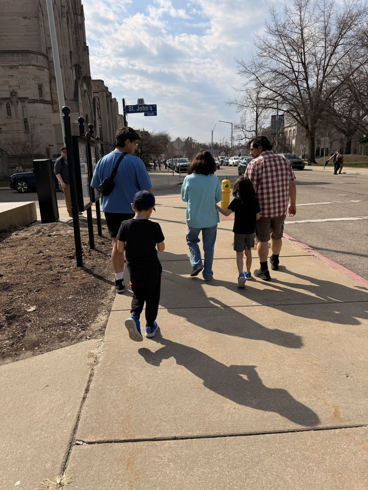

Dream Global <> Impact Local
Formamos plantadores, plantamos iglesias y movilizamos a la iglesia.
Servimos como familia junto a la iglesia hispana de Michigan, y formamos a los que plantarán en otros lugares.
Ayudando a las personas a encontrar su camino de regreso a Dios.

- Cientos
de plantadores formados con el Curso Omega en el mundo
- Docenas
de países donde la herramienta ha dado fruto
- Iglesias
plantadas en Estados Unidos y Latinoamérica
- Familias
enviadas, sirviendo como plantadores de iglesias
Las cifras del Curso Omega son de su fruto global. Lo demás es nuestro caminar como familia.
Nuestro enfoque
Todo lo que hacemos pasa por tres verbos
- 01
Formamos
Plantadores entrenados con el Curso Omega de CESI: Biblia, carácter y práctica, con un mentor que camina con ellos.
- 02
Plantamos
Iglesias nuevas que nacen sanas, con liderazgo local desde el principio y una entrega cuidada.
- 03
Movilizamos
Despertamos a la iglesia que ya existe para que ore, envíe, acoja, vaya y movilice a otros.
El ministerio
Tres frentes, una misma misión
-

CESI: formación de plantadores
El Instituto CESI USA entrena plantadores con el Curso Omega, una herramienta probada en cientos de vidas y docenas de países.
Conocer el curso -

Plantación de iglesias
De Sendero a Sturgis y Kalamazoo: plantamos, apoyamos iglesias y buscamos el próximo campo en oración.
Ver la plantación -

González en Misión
Las historias del campo: lo que Dios está haciendo, contado por una familia que sirve junta.
Seguir la misión
Nuestro caminar
De Sturgis a Kalamazoo, iglesias que ya existen
Plantamos una iglesia en Sturgis que hoy sigue con liderazgo local. Apoyamos a Iglesia Yo Soy en Kalamazoo y formamos plantadores con el Curso Omega de CESI.
Familia González · Kalamazoo, Michigan

La unidad entre ellos será perfecta, y los de este mundo entenderán que tú me enviaste, y que los amas tanto como me amas tú.
Más de MovilizarMe
Herramientas y recursos
Herramientas para movilizar
Interpretación en vivo para iglesias, talleres y recursos prácticos para servir a otros.
Ver las herramientasBiblioteca
Una biblioteca cristiana con catálogo y lector, para estudiar y preparar.
Conocer la BibliotecaPodcast
Misiones y tecnología: conversaciones cortas sobre la misión de Dios y las herramientas de hoy.
Escuchar el podcast
Quédate conectado
La misión se sostiene orando juntos
Compartimos una carta de oración de González en Misión con historias del campo y motivos para interceder. Sin ruido, sin spam: solo la misión.